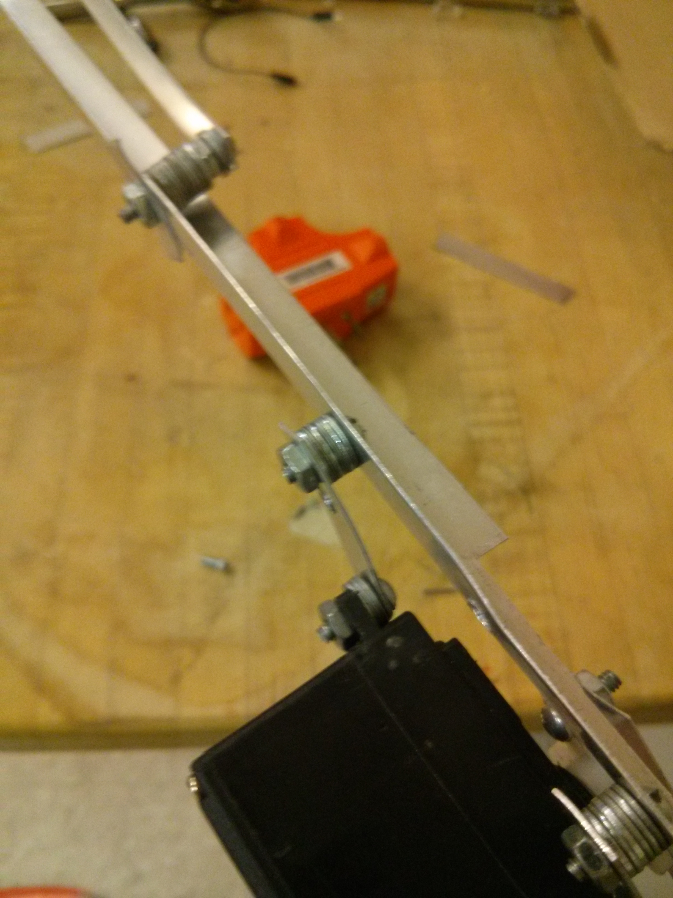

Since the lever has to be displaced a bit from the body of the servo, it is not perfectly in line with the crane arm, and as a
result, it will cause torsion while lifting. Our crane arm is designed to resist bending with as little mass as possible and would
perform very poorly when loaded under torsion. So to counteract any twisting from the lever and weight, we added a large amount of
washers to also displace the top support arm away from from the primary crane arm. Since the top support is in tension, it produces
a twisting moment in the opposite direction of the one caused by the lever and weight, thus cancelling out most of the torsion.